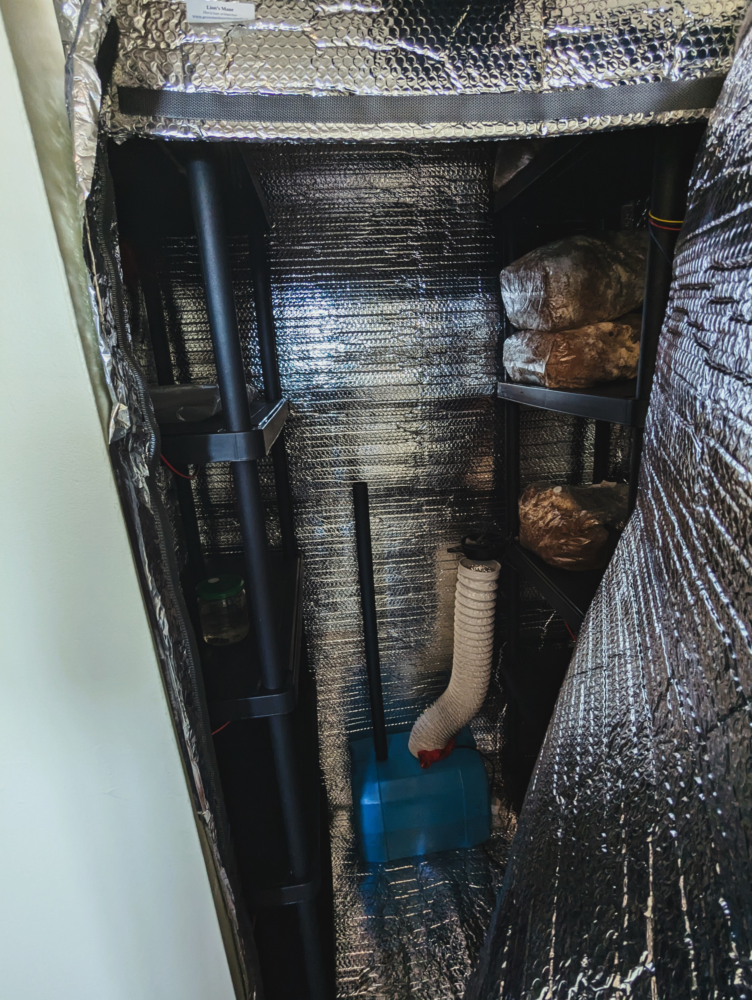
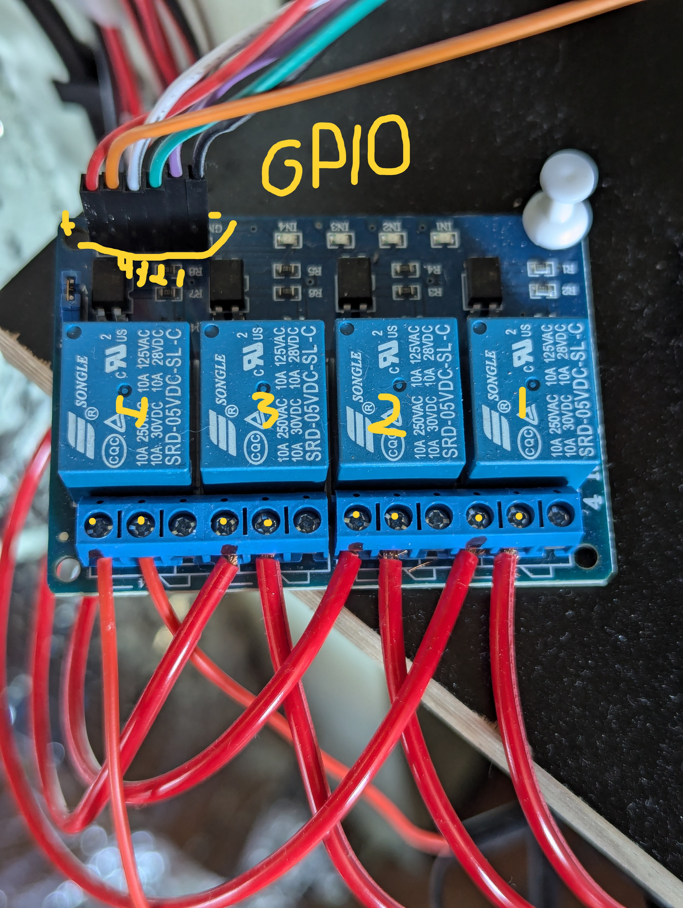
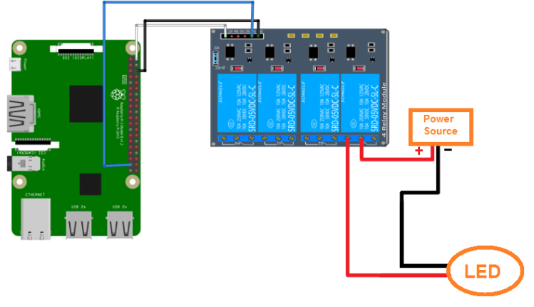

Construction de la serre : Projet OvoOx GreenHouse
Ce projet, initié en novembre 2024 dans le cadre d’un retour aux études en programmation, vise à concevoir et assembler une serre connectée de 2 m² dans un espace réduit (garde-robe). L’objectif est de cultiver des champignons de manière automatisée, en intégrant des technologies IoT (Raspberry Pi, capteurs) et des logiciels développés au fil des sessions académiques. Ce document décrit les étapes techniques de construction, d’assemblage, et de programmation.
Étape 1 : Conception et isolation
La serre a été aménagée dans un garde-robe de 2 m². Une structure d’étagères en plastique a été utilisée pour organiser l’espace verticalement. Les murs ont été isolés avec un film isolant (Isolant d'aluminium réfléchissant). Cette étape, réalisée en quelques heures, a permis de créer un environnement contrôlé pour la culture.

Isolation avec étagères en plastique et film isolant aluminisé.
Étape 2 : Acquisition du matériel
Le matériel suivant a été acquis pour le projet :
- Raspberry Pi 5 (CanaKit, 4 Go RAM) : Cerveau de la serre, utilisé pour exécuter des scripts Python et contrôler les composants via les pins GPIO.
- Relais à 4 canaux (ELEGOO) : Contrôle des appareils (ventilateurs, LEDs, brumisateur) en agissant comme un interrupteur commandé par le Raspberry Pi.
- Bande LED XUNATA (16.4ft, rouge/bleu) : Éclairage pour la croissance des plantes, alimentée par une barrette 12V.
- Brumisateur à ultrasons (DC24V, 3 têtes) : Humidification de la serre, alimenté par une barrette 24V.
- Capteur SCD30 : Mesure du CO₂, de l’humidité et de la température, connecté au Raspberry Pi via I2C.
- Ventilateurs (WOOSTAR 12V, VIVOSUN AeroZesh T6) : Circulation d’air dans la serre, alimentés par une barrette 12V.
- Barrettes d’alimentation :
- 12V/29A (MEAN WELL LRS-350-12) : Alimente les ventilateurs et les LEDs.
- 24V : Alimente le brumisateur à ultrasons.
- Fils : TUOFENG 22 AWG (rigides) pour les connexions GPIO, VIABRICO 18 AWG (souples) pour les alimentations.
Étape 3 : Branchements électriques
Les composants sont connectés via un relais à 4 canaux, qui agit comme un interrupteur commandé par le Raspberry Pi. Chaque canal du relais est relié à un appareil (ventilateurs, LEDs, brumisateur) et contrôlé par des pins GPIO du Raspberry Pi. Le relais permet d’activer ou de désactiver chaque appareil indépendamment en fonction des signaux envoyés par le code Python.

Composants du module de relais :
- Relais (les 4 blocs bleus marqués "SONGLE") : Interrupteurs électromécaniques permettant d’activer ou de désactiver un circuit électrique.
- Borniers (connecteurs à vis) : Les bornes "NO", "NC" et "C" sont utilisées pour connecter les appareils à contrôler (ventilateurs, LEDs, brumisateur).
- Broches de commande (IN1 à IN4) : Situées sur le connecteur d’entrée, elles reçoivent les signaux de commande du Raspberry Pi via les pins GPIO.
- Connecteur d'entrée (fils multicolores) : Relie le module de relais au Raspberry Pi pour envoyer les signaux de commande.
- Alimentation (VCC et GND) : Le module est alimenté directement par le Raspberry Pi (5V via VCC, GND pour la masse).
Les appareils (ventilateurs, LEDs, brumisateur) sont connectés aux barrettes d’alimentation, puis aux sorties du relais. Les entrées du relais sont câblées aux pins GPIO du Raspberry Pi (par exemple, GPIO 17, 18, 27, 22 pour IN1 à IN4), permettant un contrôle précis via des scripts Python. Par exemple, un script peut activer le canal 1 (ventilateurs) si la température dépasse un seuil mesuré par le capteur SCD30.

Schéma des branchements
Étape 4 : Configuration du Raspberry Pi
Le Raspberry Pi 5 est le contrôleur central de la serre. Il exécute des scripts Python pour lire les données du capteur SCD30 (CO₂, humidité, température) via le protocole I2C et commander les relais à travers les pins GPIO. Le Raspberry Pi est alimenté par un adaptateur 5V/3A (inclus dans le kit CanaKit). Il est configuré pour se connecter à distance via SSH, permettant la gestion des scripts depuis un ordinateur. Le système d’exploitation Raspberry Pi OS (basé sur Raspbian) a été installé, avec les bibliothèques Python suivantes :
- adafruit-circuitpython-scd30 : Pour interfacer le capteur SCD30.
- gpiozero : Pour contrôler les pins GPIO et commander les relais.
Étape 5 : Développement logiciel
Le développement logiciel suit le calendrier des sessions académiques :
- Session 1 (novembre 2024 – hiver 2025) : Cours de Python et systèmes d’exploitation. Développement des scripts Python pour le contrôle des capteurs et relais, configuration SSH, et création d’une API Flask pour les données.
- Session 2 (printemps 2025) : Cours de Java et HTML/CSS. Développement d’une application de bureau Java pour visualiser les données et d’un site web.
Le code est conçu pour être modulaire, avec des scripts séparés pour la logique matérielle, l’API, et les tests terminaux. L’intégration de l’IA (machine learning) est prévue pour optimiser les cycles de culture à long terme.
Étape 6 : Tests et validation
Des tests sont effectués pour valider le fonctionnement de la serre. Les capteurs mesurent les données environnementales, et les relais contrôlent les appareils. Des ajustements sont réalisés en fonction des résultats obtenus.
Le projet est en cours de développement, avec des améliorations continues prévues pour optimiser la culture des champignons.